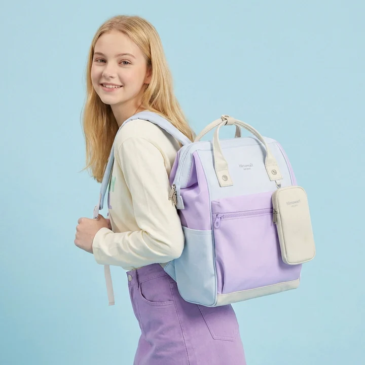

아이와 외출하는 백팩: 갈아입을 옷을 한 번에 꺼내도록

아이와 외출하다 옷을 갈아입혀야 할 때, 상의는 메인 칸에 있고 양말은 다른 파우치에 있으면 가방을 여러 번 열게 됩니다. 여벌 옷을 챙겼는지만큼 필요한 순간에 한 묶음으로 꺼낼 수 있는지도 중요합니다. 보호자가 들 가방 안에서 깨끗한 옷, 사용한 옷, 마지막 확인의 역할을 나누어보세요.
무엇을 한 묶음으로 만들까요?
아이의 일정과 날씨, 평소 필요한 갈아입기 구성을 떠올려 한 번에 쓸 옷을 모읍니다. 상의와 하의를 따로 여러 칸에 나누기보다 필요한 속옷이나 양말까지 한 주머니에 넣는 방식입니다. 모든 아이에게 같은 수량을 정할 필요는 없습니다. 외출 시간과 활동에 맞춰 준비하고, 넣기 전에 지금 입는 크기와 계절에 맞는 옷인지도 확인하세요. 오래 넣어둔 여벌 옷은 맞지 않을 수 있습니다.
형제자매의 옷은 어떻게 구분할까요?
주머니마다 사람을 구분할 수 있는 색이나 간단한 표시를 정합니다. 밖으로 개인정보를 크게 드러내기보다 보호자가 이해할 수 있는 짧은 표시면 충분합니다. 색이 비슷하다면 한쪽만 모양이 다른 주머니를 쓸 수도 있습니다. 아이별 옷을 한 주머니 안에 섞고 윗부분만 다르게 놓으면 꺼내는 중에 다시 섞일 수 있으므로 묶음 자체를 나누는 편이 확인하기 쉽습니다.
사용한 옷은 어디로 돌아오나요?
여벌 옷을 꺼낸 주머니에 오염된 옷을 바로 넣기보다, 사용한 옷을 임시로 분리할 빈 주머니를 함께 준비합니다. 물기가 있는 옷이라면 주변 물건에 닿거나 새지 않는지 확인하고 깨끗한 옷과 분리하세요. 전자기기와 서류 가까이는 피합니다. 일반 백팩의 소재 표기만으로 젖은 옷을 안전하게 밀폐 보관할 수 있다고 가정하지 않습니다. 집에 도착하면 임시 주머니부터 꺼내 각 옷의 관리법대로 정리합니다.
다른 보호자도 바로 찾을 수 있나요?
출발 전에 ‘큰 칸 위쪽의 파란 주머니가 여벌 옷, 접힌 빈 주머니가 사용한 옷용’처럼 위치와 역할을 짧게 공유합니다. 주머니를 하나 꺼낼 때 다른 짐을 전부 빼야 한다면 배치를 바꿔보세요. 실제로 누가 가방을 들 것인지도 정합니다. 가방을 유모차 손잡이에 임의로 걸기보다는 유모차 제조사가 안내한 수납 위치와 허용 조건을 확인하고, 그 안내에 맞춰 운반합니다.
돌아온 뒤 무엇을 채워두면 좋을까요?
사용한 옷을 정리한 뒤에는 빠진 여벌을 다시 넣었다고 생각하기 전에 실제 묶음을 확인합니다. 세탁 중인 옷이 있다면 메모를 남기고 다음 외출 전에 채우세요. 쓰지 않은 옷도 습기나 오염이 없는지 살펴봅니다. No.1027은 사진 속 제품 예시이며 수납량은 주머니와 옷의 부피에 따라 달라집니다. 옷을 억지로 압축하기보다 필요한 묶음이 손쉽게 드나드는지로 가방을 판단해보세요.
참고·안내
- Himawari No.1027 제품 정보
- Himawari No.1027 기존 제품 사진입니다. 본문은 보호자가 여벌 옷을 준비하는 수납 예시이며 육아 전용 기능을 의미하지 않습니다.
자주 묻는 질문
여벌 옷은 몇 벌 챙겨야 하나요?
아이의 활동과 외출 시간, 계절에 따라 다릅니다. 한 번에 갈아입을 묶음을 기준으로 필요한 양을 정하세요.
사진의 가방은 육아 전용 제품인가요?
본문은 일상 백팩에 여벌 옷을 정리하는 예시입니다. 육아 전용 기능이나 특정 수납량을 의미하지 않습니다.